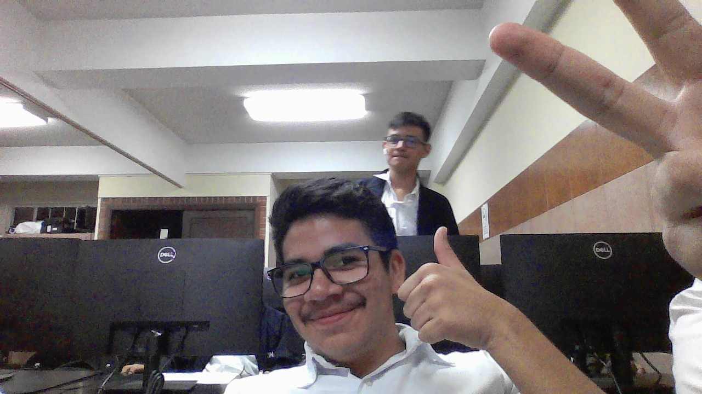

Biografía

Desde temprana edad, mi interés por la tecnología me ha llevado por un recorrido académico fascinante. Comencé mi formación en el Colegio Castillo Córdova, donde cursé la primaria, y continué mis estudios básicos en el Instituto Tecnológico de Computación (ITC). Durante este tiempo, descubrí mi pasión por la programación, una actividad que me resulta no solo útil sino también sumamente entretenida, ya que me permite resolver problemas y crear soluciones innovadoras. Aunque disfruto profundamente de la programación, me veo explorando la Ingeniería Industrial en el futuro, una carrera que creo combinará mis habilidades en tecnología con la eficiencia y gestión de procesos en el ámbito industrial.
Cosas que Hago
- Ver pelis
- Hacer Ejercicio
- Dormir